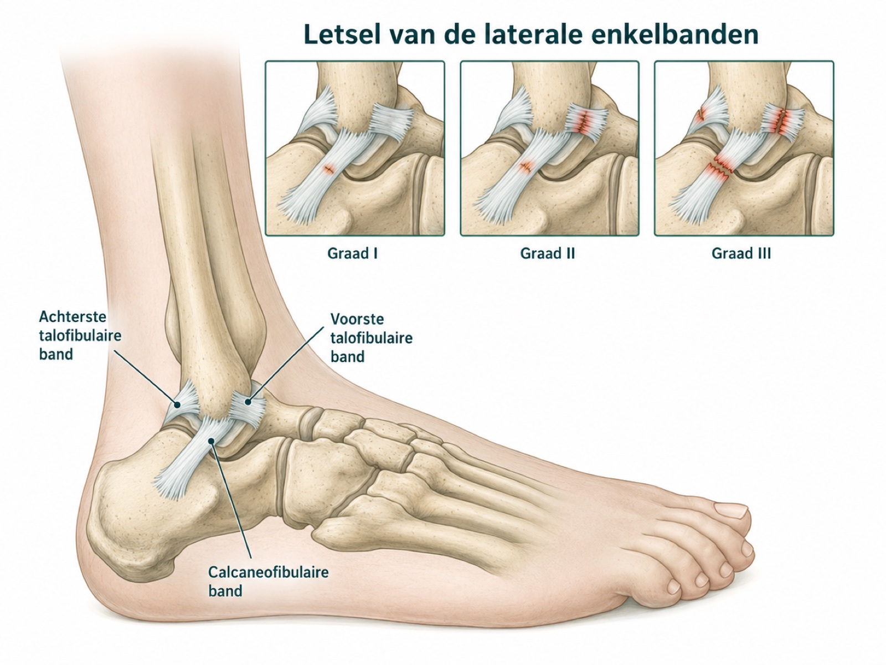
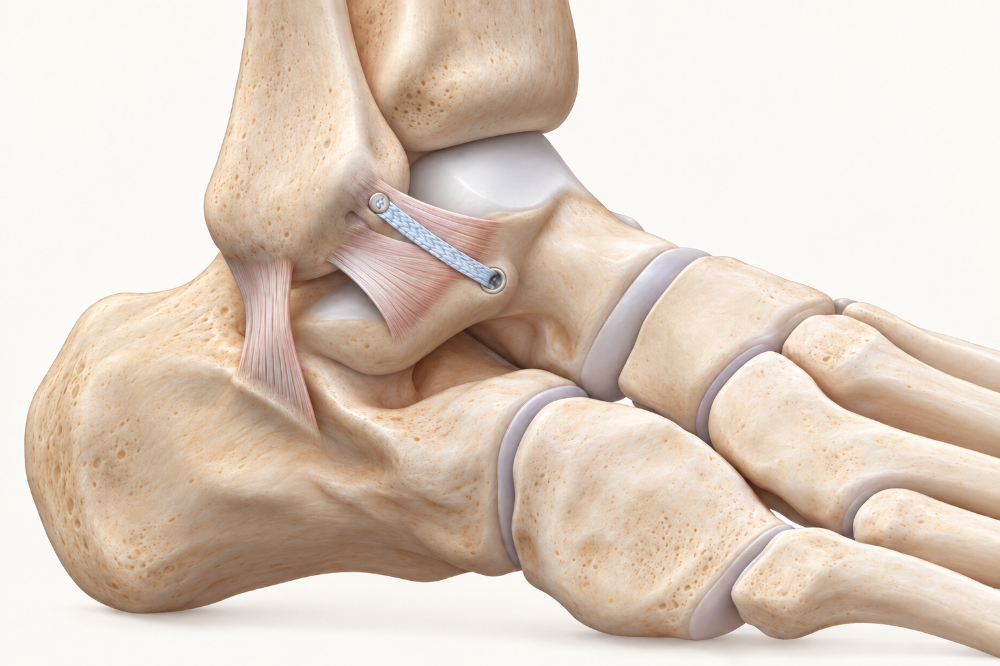

Wat is chronische enkelinstabiliteit?
Chronische enkelinstabiliteit betekent dat de enkel na een eerdere verzwikking of ander enkelbandletsel blijvend onzeker kan voelen of herhaald kan doorzwikken. Vaak gaat het om de buitenzijde van de enkel, omdat de voet bij een klassieke verzwikking naar binnen klapt en de buitenste enkelbanden onder spanning komen.

Een veelgestelde vraag is: waarom blijft mijn enkel doorzwikken na een verzwikking? Het antwoord is meestal niet een enkelvoudige verklaring. Soms zijn de banden werkelijk ruimer geworden of functioneren ze onvoldoende. Soms zijn balans, Het vermogen om te voelen waar uw voet en enkel zich bevinden en daarop uw beweging bij te sturen., spierreactie, kuitkracht, de spieren en pezen aan de buitenzijde van de enkel, pijnvermijding of vertrouwen de belangrijkste beperkende factoren. Vaak loopt dit door elkaar.
Daarom is het nuttig om twee begrippen te onderscheiden. Bij functionele instabiliteit voelt de enkel onzeker door verminderde controle, balans, spierreactie of vertrouwen, zonder dat er bij onderzoek altijd duidelijke bandlaxiteit hoeft te zijn. Bij mechanische instabiliteit is er aantoonbare laxiteit of onvoldoende bandfunctie bij lichamelijk onderzoek, soms ondersteund door gerichte beeldvorming. Beide vormen kunnen samen voorkomen.
Er is geen vaste termijn waarna een enkel automatisch chronisch instabiel is. Meestal gaat het om aanhoudende onzekerheid of herhaald doorzwikken nadat de acute fase van een verzwikking voorbij is en het herstel niet de verwachte richting op gaat.
Een enkel kan pijnlijk zijn zonder daadwerkelijk door te zwikken. Andersom kan iemand vooral onzekerheid of doorzakken ervaren met relatief weinig pijn. Die nuance is belangrijk voor de keuze van oefeningen, bracegebruik, beeldvorming en eventuele specialistische beoordeling.
Welke klachten kunnen erbij passen?
Mensen beschrijven vaak dat de enkel "wegschiet", doorzakt of onbetrouwbaar voelt. Dat gebeurt vooral op ongelijke ondergrond, bij zijwaartse bewegingen, traplopen, rennen, draaien, springen of sporthervatting. Soms ontstaat er terughoudendheid: iemand durft niet vol af te zetten of vermijdt bepaalde bewegingen uit angst opnieuw door de enkel te gaan.
Naast doorzwikken kunnen pijn aan de buitenzijde, zwelling na belasting, stijfheid, vermoeidheid rond de enkel en een gevoel van controleverlies voorkomen. Terugkerende verzwikkingen kunnen het vertrouwen verder verminderen. Als er juist diepe pijn, haperen, slotgevoel of steeds terugkerende zwelling na belasting op de voorgrond staat, kan er meer of iets anders spelen dan alleen bandinstabiliteit.
Verschil met een acute enkelverzwikking
Een enkelverzwikking is een acuut moment: de enkel klapt om en daarna ontstaan pijn, zwelling en soms blauwe verkleuring. Chronische enkelinstabiliteit gaat over het vervolg: de enkel blijft weken tot maanden later onzeker, of iemand blijft herhaald door de enkel gaan.
Dat onderscheid is belangrijk. In de acute fase gaat het onder meer om het uitsluiten van een breuk of ander letsel en om een goede eerste herstelopbouw. Later verschuift de vraag naar controle, balans, kracht, bandfunctie, voetstand, sportbelasting en mogelijke bijkomende schade in of rond het gewricht.
Wat kan het ook zijn?
Niet elk onzeker gevoel rond de buitenenkel is chronische enkelinstabiliteit. Sommige klachten lijken erop, kunnen ermee samengaan of kunnen na een verzwikking aan het licht komen. Het patroon van pijn, het moment van ontstaan en de provocerende bewegingen geven richting.
Een onzekere enkel kan op verschillende manieren ontstaan. Deze drie begrippen helpen om het verschil tussen verminderde controle, bandproblemen en bijkomende klachten te begrijpen. Ze kunnen ook naast elkaar voorkomen en zijn geen diagnose op basis van klachten alleen.
Functionele instabiliteit
De enkel voelt onbetrouwbaar doordat controle en bijsturing minder goed lukken. Dat kan te maken hebben met proprioceptie, spierreactie, kracht, vertrouwen of de overgang naar sport. Bij onderzoek hoeft geen duidelijke bandlaxiteit aanwezig te zijn.
Mechanische instabiliteit
Bij onderzoek blijkt dat een of meer enkelbanden te veel ruimte hebben of onvoldoende bijdragen aan de stabiliteit. Dit ontstaat vaak na herhaald enkelbandletsel, maar de betekenis hangt af van het onderzoek en de klachten in het dagelijks leven of tijdens sport.
Pees, kraakbeen of gewricht
Diepe pijn, haperen, terugkerende zwelling of knappen kunnen passen bij een probleem van een pees, het kraakbeen of het gewricht. Dat kan naast enkelbandinstabiliteit bestaan, maar ook een andere verklaring zijn voor een onzeker gevoel.
Onderzoek en diagnose
Bij lichamelijk onderzoek wordt gekeken naar de plek van pijn, zwelling, beweeglijkheid, stabiliteit, voetstand, looppatroon, balans, kracht en eventuele hypermobiliteit. Specifieke testen kunnen richting geven aan bandlaxiteit, peroneuspezen, subtalaire klachten of pijn vanuit het enkelgewricht. Soms wordt ook gekeken hoe de enkel reageert op functionele bewegingen die lijken op werk of sport.
Beeldvorming wordt gericht gekozen. Staande rontgenfoto's kunnen helpen om stand, bot, gewrichtsspleet, artrose of oude letsels te beoordelen. Stressfoto's kunnen soms extra informatie geven over laxiteit. Op een MRI zijn vooral zachte weefsels en veranderingen in het bot zichtbaar, zoals banden, pezen, kraakbeen, littekenweefsel en beenmergreacties. Een CT laat vooral de vorm en details van bot zien, bijvoorbeeld een klein botfragment, een oude breuklijn of de stand van het gewricht. Welke beeldvorming iets toevoegt, hangt af van de vraag die bij onderzoek ontstaat.
Behandeling
Bij veel mensen is gerichte revalidatie de basis. Dat betekent meer dan alleen rust nemen of wachten tot de pijn minder wordt. Het gaat om het opnieuw trainen van controle, reactie, vertrouwen en belastbaarheid.
Oefeningen op stabiele en later instabiele ondergrond helpen om de positie van de enkel beter te voelen en sneller te corrigeren.
Kracht van de spieren en pezen aan de buitenzijde van de enkel, kuitkracht en algemene beencontrole zijn belangrijk bij afzetten, landen, draaien en bijsturen.
Beweeglijkheid van enkel en voet kan invloed hebben op looppatroon, sporttechniek en belasting rond de buitenenkel.
Hardlopen, wenden, keren, springen en wedstrijdsituaties vragen een stapsgewijze opbouw, niet alleen een pijnvrije wandeling.
Een brace of tape kan steun geven bij sport, werk of risicobelasting. Een brace maakt een enkel niet automatisch “lui”, maar neemt gerichte revalidatie niet vanzelf over. Soms blijft een brace bij bepaalde sporten zinvol; soms kan deze geleidelijk worden afgebouwd.
Als de voetstand een belangrijke rol speelt, bijvoorbeeld bij een holvoet of cavovarus waarbij de hiel naar binnen kantelt en de buitenzijde extra wordt belast, kan alleen trainen van de enkel onvoldoende zijn. Dan kan de beoordeling ook gaan over schoenen, steunzolen, bracebeleid of in geselecteerde situaties een bredere correctie van de belasting.
Wanneer kan verwijzing naar de orthopeed worden overwogen?
Een verwijzing naar de orthopeed kan worden besproken wanneer de enkel na enkele maanden herstel en gerichte oefentherapie duidelijk instabiel blijft, regelmatig doorzwikt of onvoldoende vooruitgaat. Ook toenemende pijn, een stagnerend herstel of beperkingen bij werk, dagelijks bewegen of sport kunnen hiervoor aanleiding zijn. Bij klachten die na ongeveer zes maanden nog duidelijk aanwezig zijn, kan aanvullende beoordeling worden overwogen. Bij slotklachten, diepe pijn, terugkerende zwelling of duidelijke verslechtering is eerder overleg verstandig. Een verwijzing wordt meestal via de huisarts besproken.
Wanneer komt een enkelbandoperatie in beeld?
Een enkelbandoperatie komt alleen in geselecteerde situaties in beeld. Het doel is dan niet "alle enkelpijn oplossen", maar het herstellen of verstevigen van stabiliteit wanneer de klachten, het onderzoek en het behandelverloop daar samen op wijzen. Soms gaat het om herstel of reconstructie van de buitenbanden; soms is aanvullend beleid nodig voor pezen, kraakbeen, impingement, corpus liberum of voetstand.

Soms wordt een enkelbandherstel aangevuld met een zogenaamde internal brace: een sterke hechttape die de herstelde band tijdelijk extra ondersteunt. Dat kan worden overwogen bij bijvoorbeeld minder goed bandweefsel, ruime gewrichtslaxiteit, een heroperatie of een hoge sportbelasting. Het is geen standaardonderdeel van iedere enkelbandoperatie; de keuze hangt af van de kwaliteit van de banden, de stabiliteit en de geplande ingreep.
Revalidatie na een enkelbandoperatie
Na een enkelbandoperatie staat de eerste periode in het teken van wondgenezing en bescherming van het herstelde bandweefsel. Meestal wordt hiervoor ongeveer twee weken een loopgips of beschermende gipsspalk gebruikt, afhankelijk van de ingreep en de wondgenezing. Daarna wordt de enkel, met goede instructies en begeleiding, zo snel als verantwoord actief gemobiliseerd.
De revalidatie wordt vervolgens stapsgewijs opgebouwd met aandacht voor beweeglijkheid, afwikkeling, kracht, balans, proprioceptie en vertrouwen in de enkel. De belasting wordt aangepast aan pijn, zwelling, wondgenezing en de specifieke operatie. De precieze opbouw kan daarom verschillen wanneer bijvoorbeeld ook pezen, kraakbeen of de voetstand zijn behandeld.
Herstel na een eventuele ingreep vraagt maanden en blijft afhankelijk van revalidatie, belastbaarheid en sportniveau. Mogelijke risico's zijn onder meer wondproblemen, infectie, trombose, zenuwirritatie of doof gevoel, stijfheid, aanhoudende pijn en opnieuw instabiliteit. De afweging hoort daarom persoonlijk en zorgvuldig te zijn, zonder behandelbelofte.
Wat bespreek je tijdens een consult?
Het helpt om het beloop zo concreet mogelijk te beschrijven: de eerste verzwikking, het aantal nieuwe episodes, de richting waarin de enkel wegzakt, de ondergrond waarop het gebeurt, sport of werkbelasting, zwelling na inspanning en eventuele slotklachten. Ook eerdere foto's, MRI-verslagen, fysiotherapieprogramma's, brace-ervaringen en gebruikte schoenen kunnen nuttig zijn.
Bespreek vooral wat je beperkt: pijn, angst, doorzwikken, zwelling, sporthervatting, werk, traplopen of ongelijke ondergrond. Dat maakt duidelijker of het probleem vooral functioneel, mechanisch, intra-articulair, peesgerelateerd of standgerelateerd lijkt.
Waar kan je terecht?
Bij nieuwe of acute klachten is de huisarts het eerste aanspreekpunt. Bij herstel, balans, kracht en sportopbouw kan fysiotherapie een belangrijke rol spelen.
Als specialistische beoordeling passend is, kan de verwijzer gericht naar mij verwijzen via de gebruikelijke zorgkanalen. Bij een verwijzing op mijn naam voer ik de beoordeling in principe zelf uit. De wachttijd kan daardoor soms langer zijn. Voor afspraken, planning, uitslagen en praktische ziekenhuisinformatie zijn de officiële ETZ-kanalen leidend.
Is chronische enkelinstabiliteit al elders vastgesteld of beoordeeld en is er behoefte aan een tweede mening, dan kan de verwijzer daarvoor ook gericht naar mij verwijzen. Ik beoordeel de situatie opnieuw; een tweede mening betekent niet automatisch dat de eerdere beoordeling of behandelrichting verandert.
Veelgestelde vragen
Wat is chronische enkelinstabiliteit?
Chronische enkelinstabiliteit betekent dat de enkel na een eerdere verzwikking of enkelbandletsel blijvend onzeker kan voelen of herhaald kan doorzwikken. Dat kan te maken hebben met bandlaxiteit, maar ook met balans, spiercontrole, vertrouwen, pijn of voetstand. Er is geen vaste termijn; het gaat vooral om aanhoudende onzekerheid of herhaald doorzwikken nadat de acute fase voorbij is.
Wanneer is blijvend doorzwikken reden voor beoordeling?
Beoordeling kan zinvol zijn wanneer de enkel ondanks passende revalidatie blijft doorzwikken, wanneer sport of werk duidelijk beperkt raakt, of wanneer er bijkomende signalen zijn zoals diepe pijn, haperen, slotklachten, terugkerende zwelling of pijn hoger in de enkel.
Helpt oefentherapie?
Gerichte oefentherapie kan helpen bij balans, proprioceptie, peroneuskracht, kuitkracht, enkelmobiliteit, sportgerichte opbouw en vertrouwen. Het effect hangt af van de oorzaak van de klachten, de ernst en de kwaliteit van de opbouw.
Wanneer is beeldvorming nodig?
Beeldvorming is niet altijd nodig. Bij aanhoudende klachten kunnen staande rontgenfoto's, stressfoto's, MRI of CT worden gebruikt om stand, bot, kraakbeen, pezen, syndesmose of een los fragment beter te beoordelen. Een MRI bewijst instabiliteit niet op zichzelf.
Wat kan erop lijken?
Peroneuspeesklachten, sinus tarsi-klachten, kraakbeenletsel, corpus liberum, syndesmoseletsel, voorste of achterste inklemming, subtalaire klachten, holvoet/cavovarus en artrose kunnen klachten geven die op instabiliteit lijken of ermee samengaan.
Wanneer komt een enkelbandoperatie in beeld?
Een enkelbandoperatie komt alleen in geselecteerde situaties in beeld, bijvoorbeeld bij blijvend invaliderend doorzwikken ondanks passende revalidatie, duidelijke mechanische instabiliteit of relevant bijkomend letsel. Het is geen algemene oplossing voor alle enkelpijn.
Is een internal brace altijd nodig?
Nee. Een internal brace kan een herstelde enkelband extra ondersteunen, maar is niet bij iedere operatie nodig. De beschikbare literatuur laat goede resultaten zien, maar maakt niet duidelijk dat deze versteviging voor iedereen betere uitkomsten geeft dan een zorgvuldig uitgevoerd enkelbandherstel zonder internal brace. De keuze hangt onder meer af van de kwaliteit van het bandweefsel, algemene laxiteit, eerdere operaties, sportbelasting en de manier waarop de enkelband wordt hersteld.